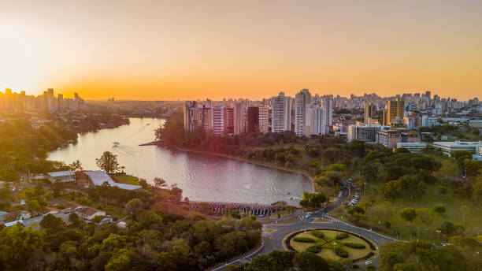

Paraná é um estado localizado no Sul do Brasil, com capital em Curitiba. Conhecido pelas suas belezas naturais, como o Parque Nacional do Iguaçu (onde estão as famosas Cataratas do Iguaçu) e a Serra do Mar, o estado também é destaque pelo clima temperado e suas florestas e montanhas. A cultura paranaense é influenciada por imigrantes italianos, poloneses e alemães, e é refletida em festas como a Festa da Uva e o Pinhão. A economia do Paraná é forte na agricultura, com destaque para a produção de soja, milho, feijão, café e carne, além de ser um grande polo industrial, especialmente no setor automotivo. O turismo é impulsionado pelas Cataratas do Iguaçu, o litoral e os parques naturais.
